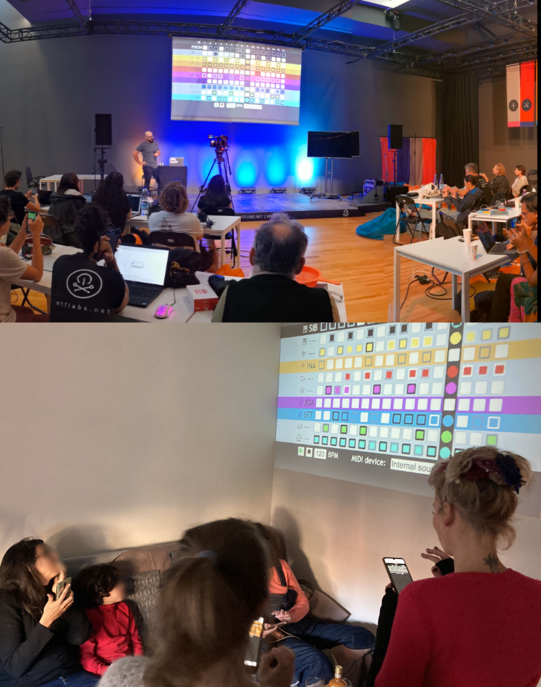

A collaborative platform for audience participation in live music
Modern musical events impose a boundary between performers and the audience, with only the former playing and active role. We introduce Count-Me-In, a collaborative music sequencer that uses a distributed Web architecture to promote audience participation in music performances, installations, and other related contexts. Count-Me-In uses a step-sequencer design to reduce the negative effects of network latency on the participants' experience.
Overview
Count-Me-In is a collaborative music system that enables audiences to actively participate in live performances and installations. Built as a distributed web platform, it transforms audience members from passive listeners into active contributors, allowing collective musical structures to emerge in real time.
The project explores how web and mobile technology can support shared authorship, participation, and emotional engagement in musical contexts.

Count-Me-In sessions. Top: Music Tech Fest 2022 (Aveiro, Portugal). Bottom: playful session at home.
Carrascal, Juan Pablo. (2022, June 7). Count-Me-In: A Collaborative Step Sequencer for Audience Participation. Proceedings of the 2022 Sound and Music Computing Conference (SMC22). DOI: 10.5281/zenodo.6573453
Carrascal, Juan Pablo. (2022, June 7). Social / Musical Gaming with Count-Me-in (demo). Proceedings of the 2022 Sound and Music Computing Conference (SMC22). DOI: 10.5281/zenodo.6576041